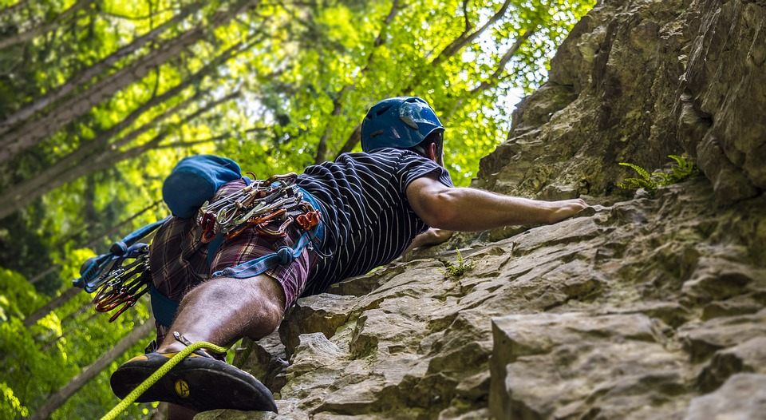
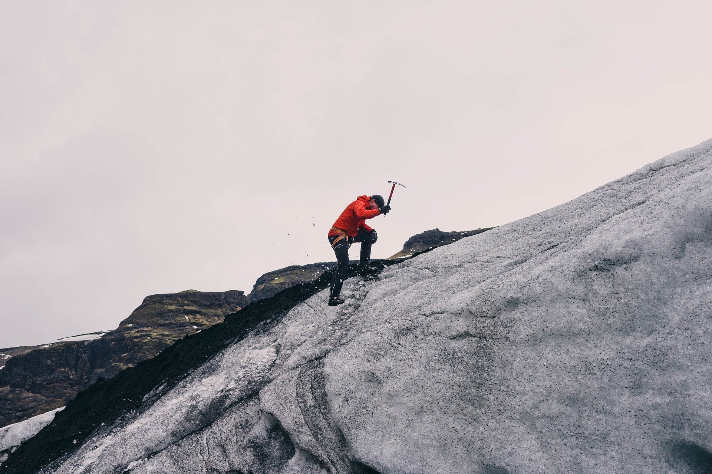
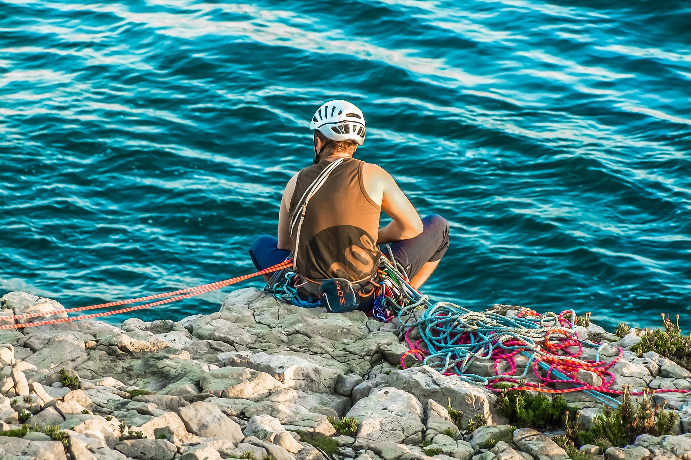

La escalada
¿Que es la escalada?
La escalada es un deporte de riesgo que consiste en subir paredes rocosas

¿Donde se realiza este deporte?
Los lugares en los que se puede practicar este deporte son:
Objetivos en la escalada
En la escalada tradicional, debemos seguir los siguientes pasos:
- Asegurar la cuerda a nuestro arnes y al del compañero que nos apoya
- Subir la pared hasta arriba del todo
- Una vez arriba, bajar hasta abajo por ti mismo o hacer rapel con la ayuda de tu compañero


Los escaladores mas famosos
Dale a este enlace para saber mas detalles sobre los escaladores mas famosos
Material necesario para realizar la escalada
En esta tabla se muestra distintos elementos necesarios en este deporte con sus precios
Escalada para principiantes
| Equipo |
Precio |
| Cuerda |
89€ |
| arnes |
34€ |
| Pies de gato |
49€ |
| Magnesio (no necesario) |
| Guantes (no necesario) |
6€ Minimo |
| 25€ Maximo |
Dale a este enlace para saber mas detalles sobre el material de la escalada
¿Sigues interesado en la escalada?
Dale a este enlace para profundizar muchos mas conceptos sobre este deporte